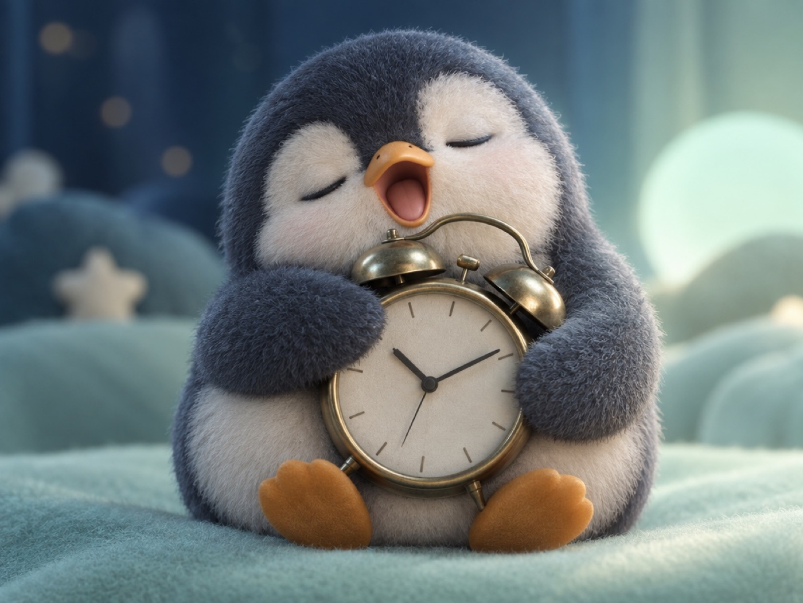

📝 DRAFT · 下書き — まだ本番に出していません · 下書き一覧
🐧 EVERYDAY LIFE⚡ 17 SEC
When you do not sleep enough, small things look scary 💤

The Big Rule
They say there is a must-keep rule when you practice confidence.
It is not being short on sleep.
Tired Brain
It is said that with little sleep, the brain reacts too much to worry.
⚡ TRY IT
Same noise, different sleep
4hours of sleep last night
🧠 Brain alarm
Set your sleep. Then play the noise.
😱 A monster!? My heart is racing!
😟 Hmm… what was that? I am a little scared.
😌 Oh, something is there. Let's look.
🐈 It was just a cat. The noise was the same every time.
📝 Your tries
Small Things
Even small things that are usually fine suddenly feel scary.
Sleep First
On days you cannot be brave, sleep first.
📚 I learned this from the Japanese blog "Panda no Ondo".